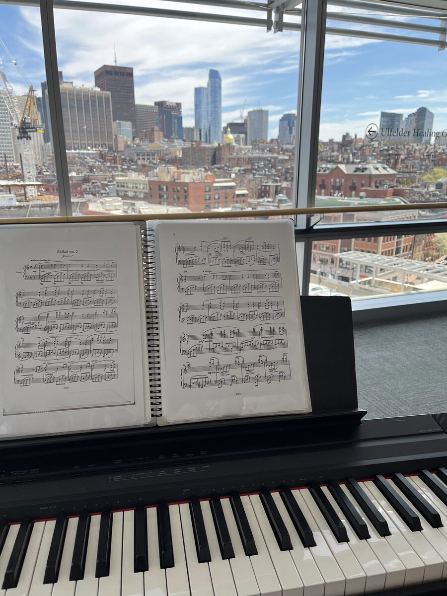

Music
Piano since I was small.
I’ve played piano since I was small, long enough that it’s no longer something I practice, but part of how I live.
Music has followed me from Beijing to Boston to Philadelphia, and these days I also compose for an a cappella group. This page collects some of my piano recordings, stretching from last month all the way back to almost twenty years ago. If you scroll far enough, you’ll meet six-year-old me.
The Chamberist
Penn Chamber Music · piano four hands · Zhixin plays primo
Four-hand piano is one of my favorite kinds of music-making: two players share one bench and one keyboard, so every tempo change and dynamic has to be coordinated with your partner. These are my performances with Penn Chamber Music, where I play primo.
- III. Scherzo. Allegro
- IV. Allegro
Zhixin Zhou, primo · Haohan Wei, secondo
coached by Junwen Liang
- Allegro molto moderato
- Largo
- Scherzo. Allegro vivace
- Finale. Allegro molto moderato
Zhixin Zhou, primo · Haohan Wei, secondo
coached by Hanchien Lee
Zhixin Zhou, primo · Saket Ram, secondo
coached by Michael Djupstrom
The Soloist
A longitudinal study · n = 1 · one pianist, followed for eighteen years
As a developmental psychologist, I can’t resist presenting my own playing as longitudinal data: the same participant (me), the same instrument, and four waves of data collection from age six to now.
2008 · age six
2014 · age ten
- I. Grave — Allegro di molto e con brio
Recent
Recent
Coda · Beyond Performance
In 2024, I was a volunteer pianist in the Environmental Music Program at the Mass General Cancer Center, playing weekly sessions in the outpatient area. I brought live music into the clinical environment to support patients, families, and staff, and I adapted repertoire in real time for patients in active treatment.
